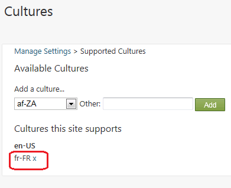
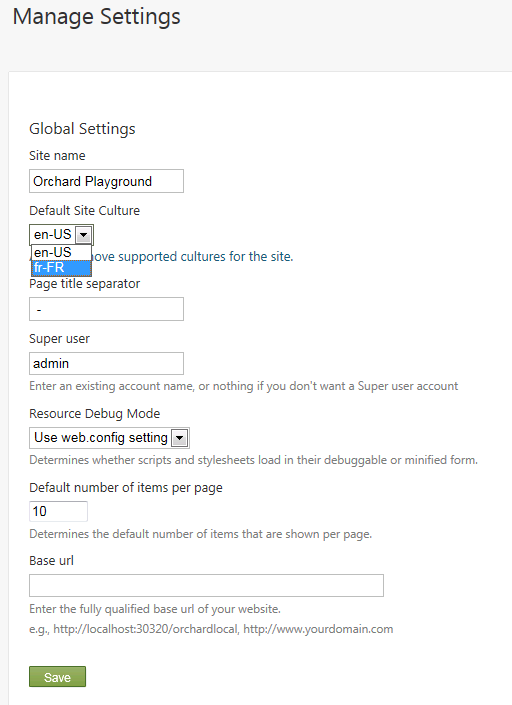
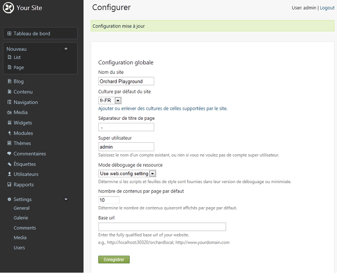
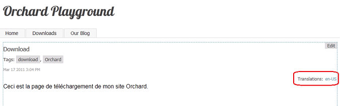

Orchard's localization management is hosted on an external service (Crowdin), the project is available for the public and contributions are welcome!
Orchard supports two kinds of localization:
- Localization of text strings in the Orchard application and in installed modules.
- Localization of database-driven content items.
This topic describes both of these features.
Localizing the Orchard Application and Orchard Modules
All strings in the Orchard application are output through a single T() method that can look up a translated string based on the default site culture. By default, Orchard includes strings for English (en-US), but you can add support for additional cultures. Translations for the dashboard UI and all static strings in the front end can also be added to the application through translation files in .po format. To localize a site for a culture, you download and install the appropriate set of .po files, and then you update your site settings as shown in this section.
Note In .NET Framework applications, localization is usually done using .resx files and satellite assemblies. Orchard takes a more lightweight approach that uses .po files. In Orchard, the number of translation files is the number of modules multiplied by the number of supported cultures. That number could rapidly grow, and the satellite-assembly design wasn't built for that kind of usage. On the other hand, .po files can be loaded and unloaded on demand. Like .resx files, .po files are a standard format for which many tools exist.
Installing translation files
As an example, download a set of .po translation files for French (fr-FR). Browse to the page for the files at the following URL:
https://crowdin.net/download/project/orchard-cms/fr.zip.
Click the link to download the .po files and save the .zip file to your computer.
Method 1: Extracting the zip
Extract the downloaded .zip file into the root folder of your website. Make sure you extract the contents to the actual Orchard root folder, and not to a subfolder named for the .zip file. When Windows opens a Confirm Folder Replace window and asks whether you want to merge the extracted contents into the Orchard folders of the same names in your website, select Do this for all current items and then click Yes to merge in the translation files.
This method of extracting the po files by expanding the zip file into your site's directory is very simple but if your site does not have all the translated modules that are in the file, you may end up with some additional directories that you don't need. In order to avoid that, you can use the following alternative method.
Method 2: Using Translation Manager
The Translation Manager Feature in Vandelay Industries module, available from the gallery, adds commands to install translation files more parsimoniously.
Once you have the module installed and the po file that you want to install downloaded, enter the following command, replacing the path to the po file as necessary:
install translation c:\temp\fr.zip
This should have only extracted those resources for the modules that are actually installed that it has translations for. If a module is not found, running the command won't create unnecessary directories and your Orchard site will remain clean.
If you later install additional modules for which a translation exists, it is possible to re-run the command.
Switching the site to another culture
To change the default culture for the application, go to the Settings => General screen in the Orchard dashboard. Under Default Site Culture, click Add or remove supported cultures for the site.

In the Cultures screen, select a culture from the Add a culture list (for example, fr-FR) and then click Add. The culture code is added under Cultures this site supports. To remove a culture, click the x button next to it.

After you've added one or more cultures, click General on the dashboard to return to the Manage Settings screen.
In the Default Site Culture list, select the culture to set as the default. When you're done, click Save.

Assuming that you have the appropriate set of .po files installed, applying a new culture has the effect of translating the text in the dashboard menu and UI text. The following illustration shows the effect of changing the culture to fr-FR.
Note: The translation files might not be complete.

Setting the default site culture to a specific culture won't have any effect unless you have a corresponding translation file installed. Orchard searches the following paths to find translation files, from most to least specific:
- Core localization file path ~/Core/App_Data/Localization/<culture-code>/orchard.core.po
- Modules localization file path ~/Modules/<module-name>/App_Data/Localization/<culture-code>/orchard.module.po
- Theme localization file path ~/Themes/<theme-name>/App_Data/Localization/<culture-code>/orchard.theme.po
- Root localization file path ~/App_Data/Localization/<culture-code>/orchard.root.po
- Tenant localization file path ~/App_Data/Sites/<tenant name>/Localization/<culture-code>/orchard.po
Translation availability
You can download additional .po files for other cultures from http://orchardproject.net/localization. Translations are provided by the community. If you don't find the culture you're looking for, please consider contributing it. It's a few hours of work and it will benefit the whole community.
Contributing new translations
Working with a plain text editor
The localization tool available at https://crowdin.net/project/orchard-cms can prepare stub files for a specific language. Orchard's translations are stored in the form of PO-files in packages, that you can add to your own Orchard instance. These packages are regenerated at the beginning of every hour (the process takes 2-3 minutes). Please visit the project home page on Crowdin to see the progress of the translations for each language.
You can download all the translations for each language for both projects: Orchard CMS, Orchard CMS Gallery.
The downloaded .zip file contains the set of .po files that you can edit using a text editor. When you're done, please subscribe to our localization mailing list by sending email to join-orchard-localization@lists.outercurve.org, and then send the zipped package of .po files to the list.
Please make sure when working with .po files that the files are saved in UTF-8 with Byte Order Mark. This is usually a setting in your text editor (in Notepad it is under the Encoding drop-down in the "Save As" dialog).
Translation File Format
The following illustration shows the format of a translation file. Each text string is represented by elements listed in the following table.
| A reference (see below) | #: reference-string |
|---|---|
| An ID, which is often the original (untranslated) string. After the ID is set, this string should not be changed even if the English string changes, so that existing translations continue to work even if they're not immediately updated. | #| msgid "id-string" |
| The current English string for reference. This helps the translator. | msgid "English-string" |
| The translated string. | msgstr "translated-string" |

How to contribute
- Register on Crowdin.
- Go to the project page of Orchard CMS and Orchard CMS Gallery and apply to join the project.
- Your application will be accepted shortly and you'll be added to the project as "Proofreader" for the selected languages. This means that you'll be able to edit and approve translations (which is necessary for the translated strings to be included in the downloadable packages).
- If you are new to the Orchard translations, please consult with other translators of the same language and make sure you follow the same conventions.
Resource String Reference
The reference for a resource string in a .po file (the reference-string value described in the previous section) is optional. If no reference is specified, the resource string will be used as a fallback whenever a resource with the same ID is queried with a reference that can't be found. This is a useful way to create generic resource strings that are used in multiple places in the application and are not context-sensitive. You can always override a generic fallback like this as needed.
The reference strings can be stored in different locations, depending on how the string is used in the application:
- Strings from views: Use the virtual path of the view from the root of the application (for example, ~/Themes/TheThemeMachine/Views/User.cshtml).
- Strings from .cs files: Use the fully qualified type name of the class where the string is being used (for example,
Orchard.Packaging.AdminMenu). - Strings from module manifests or theme manifests: Use the virtual path of the manifest from the root of the application (for example, ~Themes/TheThemeMachine/Theme.txt). Note that module and theme manifest localization uses a path for fields as the key. For example, the Author field uses the key "Author" and the Description field of the Gallery feature would be under the key "Gallery Description".
Contributing files for third party modules
Our localization infrastructure is built to host translations for third party modules. If you are the author of a module or want to contribute translations for a module, you can generate po files for it using the Translation Manager module.
From an Orchard command line, type the following command (for the example of the Bing.Maps module):
extract default translation /Extensions:Bing.Maps /Output:\temp
This will create a new Orchard.en-us.po.zip file with the strings for the module. The command looks at the source code for the module and creates entries for T-wrapped strings, manifest strings and everything that should be localizable.
Please send this file to join-orchard-localization@lists.outercurve.org so that we can add it to the online localization database.
Localizing Database-Driven Content Items
In addition to application and module localization, Orchard provides the ability to translate content items that are stored in the database. To localize content items, you must enable the Localization feature. In the dashboard, click Modules, and then on the Features tab you will see Localization. Click the Enable link.

By default, both the Page and Blog Post content types are localizable, because they both contain the Localization part. You can add the Localization part to other content types that need translation. Click Content on the dashboard, and then view the items in the Manage Content screen. Notice the + New Translation link for each content item.

Note This link appears only if you have more than one culture enabled on the site (see previous section), and if you have enabled the Localization feature.
Clicking the + New Translation link allows you to define a translated version of the content item to be associated with the "parent" content item (in the site's default culture). Each translated content item is treated as a unique content item in the system. On the Translate Content editor screen, you can define the culture code for the content item. The permalink will change accordingly in order to ensure that URLs are unqiue for each translation. You can then translate the content item from the default site culture to the selected culture.

Add some translation text in the body of the page, and then click Save. After the content item is saved, the current culture code is indicated, along with links to any related content items in different cultures.
When you browse content items on the site, if there are translations available for a content item, links to those content items will be displayed. This makes it easy for your site visitors to switch between translations of the item. This is what the site looks like when you view the English (en-US) item:

Click the culture code link to see translated version of the page. When you do, the original cultural code (en-US) appears as a link to the original page.

To enable localization for custom content types, add the Localization part to the content type. For example, to add localization to a custom content type named MyEvent, click Content on the dashboard, and then click the Content Types tab. Click Edit on the MyEvent type (this example assumes the custom type already exists). Click Add in the Parts section of the type. The Add screen is displayed, and you can select Localization or other parts to add.

For more information about creating and working with custom content types, refer to the Creating Custom Content Types topic.
Note The localization feature is a work in progress, and not all parts of the Orchard application are yet localizable. For example, Orchard does not yet provide an automatic way to filter and display only content items in a given culture (one instance of this is the browser's default culture). We will address this in a future release. In the meantime you can provide your own implementation of
ICultureSelectorin a module. If you want to give us feedback on localization support in Orchard (for example, to help us understand the scenarios that are important for your site), please contact at join-orchard-localization@lists.outercurve.org and drop us a line!
Translating an Html Widget
Note these steps apply to a clean installation using the default theme 'The Theme Machine'
In the admin panel, navigate to Modules and verify that you have the Localization module installed and enabled. The next step is to navigate to Content in the admin panel. Select the Content Types tab page on top and click Edit to adjust the Html Widget. Our goal is to translate a Html Widget. Click Add Parts in the Parts section. Here we select the Localization part and click Save to add this part. At the bottom of the page click Save again to save your Content Item adjustments.
Now we need to navigate to the Settings menu item in the admin panel. Under the section Default Site Culture you can add the cultures that you want to support. In our case we have nl-BE and en-US. Click Save to apply your culture settings.
Navigate to the Widgets menu item. On the Default layer find for example the FooterQuadThrid section and click Add to add a Widget. Now you need to Choose A Widget, select the Html Widget, because this is the one that we adjust. Now fill in the needed information (Title and Content) and click Save. Your Html Widget is now added to the FooterQuadThird section. Now we are ready to translate the item. Select you newly added widget to edit it. On top of the Edit Widget page you will find the following text: + New translation. Click this to add the translation for another culture.
Change History
- Updates for Orchard 1.8
- 11-03-14: Updated Localization steps and procedure (aka Crowdin)
- 3-17-11: Updated for references to dashboard.
- 3-17-11: Updated screens and procedures in section on localizing database-driven content items.
- 3-18-11: Updated screens and procedures in section on localizing the Orchard application and modules.
- 4-12-11: Structure of the document modified. Added online tool tutorial.